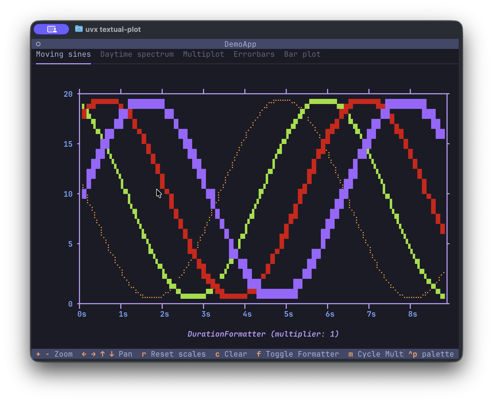
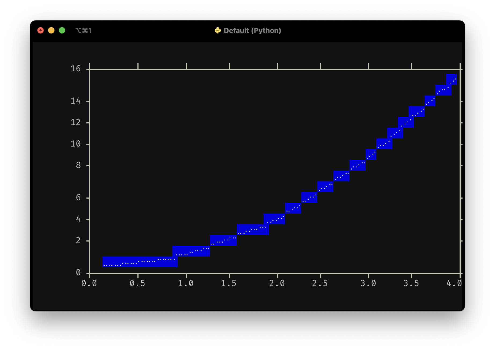
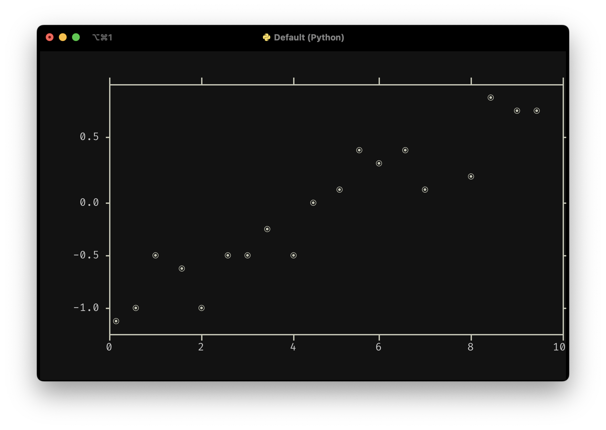

A native plotting widget for Textual apps
Textual is an excellent Python framework for building applications in the terminal, or on the web. This library provides a plot widget which your app can use to plot all kinds of quantitative data. So, no pie charts, sorry. The widget support scatter plots and line plots, and can also draw using high-resolution characters like unicode half blocks, quadrants and 8-dot Braille characters. It may still be apparent that these are drawn using characters that take up a full block in the terminal, especially when plot series overlap. However, the use of these characters can reduce the line thickness and improve the resolution tremendously.
Screenshots




The daytime spectrum dataset shows the visible-light spectrum recorded by an Ocean Optics USB2000+ spectrometer using the DeadSea Optics software. It was taken in the morning while the detector was facing my office window.
Features
- Line plots
- Scatter plots
- Automatic scaling and tick placement at nice intervals (1, 2, 5, etc.)
- Axes labels
- High-resolution modes using unicode half blocks (1x2), quadrants (2x2) and braille (2x8) characters
- Mouse support for zooming (mouse scrolling) and panning (mouse dragging)
- Horizontal- or vertical-only zooming and panning when the mouse cursor is in the plot margins
Running the demo / installation
Using uv:
uvx textual-plot
Using pipx:
pipx run textual-plot
Install the package with either
uv tool install textual-plot
or
pipx install textual-plot
Alternatively, install the package with pip (please, use virtual environments) and run the demo:
pip install textual-plot
In all cases, you can run the demo with
textual-plot
Tutorial
A minimal example is shown below:

from textual.app import App, ComposeResult
from textual_plot import PlotWidget
class MinimalApp(App[None]):
def compose(self) -> ComposeResult:
yield PlotWidget()
def on_mount(self) -> None:
plot = self.query_one(PlotWidget)
plot.plot(x=[0, 1, 2, 3, 4], y=[0, 1, 4, 9, 16])
MinimalApp().run()
You include a PlotWidget in your compose method and after your UI has finished composing, you can start plotting data. The plot() method takes x and y data which should be array-like. It can be lists, or NumPy arrays, or really anything that can be turned into a NumPy array which is what's used internally. The plot() method further accepts a line_style argument which accepts Textual styles like "white", "red on blue3", etc. For standard low-resolution plots, it does not make much sense to specify a background color since the text character used for plotting is a full block filling an entire cell.
High-resolution plotting
The plot widget supports high-resolution plotting where the character does not take up the full cell:

from textual.app import App, ComposeResult
from textual_plot import HiResMode, PlotWidget
class MinimalApp(App[None]):
def compose(self) -> ComposeResult:
yield PlotWidget()
def on_mount(self) -> None:
plot = self.query_one(PlotWidget)
plot.plot(
x=[0, 1, 2, 3, 4],
y=[0, 1, 4, 9, 16],
hires_mode=HiResMode.BRAILLE,
line_style="bright_yellow on blue3",
)
MinimalApp().run()
Admittedly, you'll be mostly plotting with foreground colors only. The plot widget supports four high-resolution modes: Hires.BRAILLE (2x8), HiRes.HALFBLOCK (1x2) and HiRes.QUADRANT (2x2) where the size between brackets is the number of 'pixels' inside a single cell.
Scatter plots
To create scatter plots, use the scatter() method, which accepts a marker argument which can be any unicode character (as long as it is one cell wide, which excludes many emoji characters and non-Western scripts):

import numpy as np
from textual.app import App, ComposeResult
from textual_plot import PlotWidget
class MinimalApp(App[None]):
def compose(self) -> ComposeResult:
yield PlotWidget()
def on_mount(self) -> None:
rng = np.random.default_rng(seed=4)
plot = self.query_one(PlotWidget)
x = np.linspace(0, 10, 21)
y = 0.2 * x - 1 + rng.normal(loc=0.0, scale=0.2, size=len(x))
plot.scatter(x, y, marker="⦿")
MinimalApp().run()
The full demo code
Finally, the code of the demo is given below, showing how you can handle multiple plots and updating 'live' data:
from __future__ import annotations
import importlib.resources
import itertools
import numpy as np
from textual import on
from textual.app import App, ComposeResult
from textual.binding import Binding
from textual.containers import Container, Grid
from textual.widgets import Footer, Header, Label, TabbedContent, TabPane
from textual_hires_canvas import HiResMode
from textual_plot import DurationFormatter, NumericAxisFormatter, PlotWidget
class SpectrumPlot(Container):
BINDINGS = [("m", "cycle_modes", "Cycle Modes")]
_modes = itertools.cycle(
[HiResMode.QUADRANT, HiResMode.BRAILLE, None, HiResMode.HALFBLOCK]
)
mode = next(_modes)
def compose(self) -> ComposeResult:
yield PlotWidget()
def on_mount(self) -> None:
# Read CSV data included with this package
self.spectrum_csv = importlib.resources.read_text(
"textual_plot.resources", "morning-spectrum.csv"
).splitlines()
# plot the spectrum and set ymin limit once
self.plot_spectrum()
self.query_one(PlotWidget).set_ylimits(ymin=0)
def plot_spectrum(self) -> None:
x, y = np.genfromtxt(
self.spectrum_csv,
delimiter=",",
names=True,
unpack=True,
)
plot = self.query_one(PlotWidget)
plot.clear()
plot.plot(x, y, hires_mode=self.mode)
plot.add_v_line(380, "dark_red", "IR boundary")
plot.add_v_line(750, "purple4", "UV boundary")
plot.set_xlabel("Wavelength (nm)")
plot.set_ylabel("Intensity")
plot.show_legend()
def action_cycle_modes(self) -> None:
self.mode = next(self._modes)
self.plot_spectrum()
class SinePlot(Container):
BINDINGS = [
("c", "clear", "Clear"),
("f", "toggle_formatter", "Toggle Formatter"),
("m", "cycle_multiplier", "Cycle Multiplier"),
]
# Update frequency in Hz (updates per second)
UPDATE_FREQUENCY: float = 24.0
N: int = 1
use_duration_formatter: bool = False
# Available multipliers
_multipliers = itertools.cycle([1, 10, 100, 1000, 10_000, 100_000])
x_multiplier: float = next(_multipliers)
def compose(self) -> ComposeResult:
yield PlotWidget()
def on_mount(self) -> None:
self._timer = self.set_interval(
1 / self.UPDATE_FREQUENCY, self.plot_moving_sines, pause=True
)
# Set initial x-axis label
self._update_x_label()
def on_show(self) -> None:
self._timer.resume()
def on_hide(self) -> None:
self._timer.pause()
def action_clear(self) -> None:
self.N = 1
def action_toggle_formatter(self) -> None:
"""Toggle between NumericAxisFormatter and DurationFormatter."""
self.use_duration_formatter = not self.use_duration_formatter
plot = self.query_one(PlotWidget)
if self.use_duration_formatter:
plot.set_x_formatter(DurationFormatter())
else:
plot.set_x_formatter(NumericAxisFormatter())
# Update x-axis label
self._update_x_label()
# Force a replot with current data
self.plot_moving_sines()
def action_cycle_multiplier(self) -> None:
"""Cycle through different multipliers."""
self.x_multiplier = next(self._multipliers)
# Update x-axis label
self._update_x_label()
# Force a replot with current data
self.plot_moving_sines()
def _update_x_label(self) -> None:
"""Update the x-axis label with formatter name and multiplier."""
plot = self.query_one(PlotWidget)
formatter_name = plot._x_formatter.__class__.__name__
plot.set_xlabel(f"{formatter_name} (multiplier: {self.x_multiplier})")
def plot_moving_sines(self) -> None:
plot = self.query_one(PlotWidget)
plot.clear()
# Generate x values: after N updates at UPDATE_FREQUENCY Hz,
# we have N data points spanning N/UPDATE_FREQUENCY seconds
# So x ranges from 0 to N/UPDATE_FREQUENCY with N points
x = np.linspace(0, self.N / self.UPDATE_FREQUENCY, self.N + 1)
x_plot = x * self.x_multiplier
plot.plot(
x=x_plot,
y=10 + 10 * np.sin(x + 3),
line_style="yellow",
hires_mode=HiResMode.BRAILLE,
)
plot.plot(
x=x_plot,
y=10 + 10 * np.sin(x + 2),
line_style="green",
hires_mode=HiResMode.QUADRANT,
)
plot.plot(
x=x_plot,
y=10 + 10 * np.sin(x + 1),
line_style="red3",
hires_mode=HiResMode.HALFBLOCK,
)
plot.plot(
x=x_plot,
y=10 + 10 * np.sin(x),
line_style="blue",
hires_mode=None,
)
plot.set_ylimits(0, 20)
self.N += 1
class MultiPlot(Grid):
BINDINGS = [Binding("r", "reset_scales", "Reset scales", priority=True)]
DEFAULT_CSS = """
MultiPlot {
grid-size: 2 4;
grid-rows: auto 1fr;
Label {
text-align: center;
text-style: bold;
padding: 1 2 0 2;
width: 100%;
}
}
"""
def compose(self) -> ComposeResult:
yield Label("f(x) = x")
yield Label("f(x) = x ** 2")
yield PlotWidget(id="x")
yield PlotWidget(id="x-squared")
yield Label("f(x) = 1 / |1 + x|")
yield Label("f(x) = sqrt(x)")
yield PlotWidget(id="one-over-x")
yield PlotWidget(id="sqrt-x")
def on_mount(self) -> None:
for plot in self.query(PlotWidget):
plot.margin_left = 8
plot.margin_top = 0
plot.margin_bottom = 1
self.plot()
def plot(self) -> None:
plot = self.query_one("#x", PlotWidget)
x = np.linspace(plot._x_min, plot._x_max, 101)
plot.clear()
plot.plot(x, x, hires_mode=HiResMode.BRAILLE)
plot = self.query_one("#x-squared", PlotWidget)
plot.clear()
plot.plot(x, x**2, hires_mode=HiResMode.BRAILLE)
plot = self.query_one("#one-over-x", PlotWidget)
plot.clear()
plot.plot(x, 1 / abs(1 + x), hires_mode=HiResMode.BRAILLE)
plot = self.query_one("#sqrt-x", PlotWidget)
plot.clear()
plot.plot(x, np.sqrt(x), hires_mode=HiResMode.BRAILLE)
@on(PlotWidget.ScaleChanged)
def adjust_scales(self, event: PlotWidget.ScaleChanged) -> None:
for plot in self.query(PlotWidget):
plot.set_xlimits(event.x_min, event.x_max)
plot.set_ylimits()
self.plot()
def action_reset_scales(self) -> None:
for plot in self.query(PlotWidget):
plot.set_xlimits(0.0, 1.0)
plot.set_ylimits()
self.plot()
class ErrorBarPlot(Container):
BINDINGS = [
("n", "new_data", "New data"),
("m", "cycle_marker", "Marker"),
("h", "cycle_hires_mode", "HiRes"),
]
N = 100
_marker = itertools.cycle(["", "o"])
marker = next(_marker)
_hires_mode = itertools.cycle([None, HiResMode.BRAILLE])
hires_mode = next(_hires_mode)
def compose(self) -> ComposeResult:
yield PlotWidget()
def on_mount(self) -> None:
self.action_new_data()
plot = self.query_one(PlotWidget)
plot.set_xlimits(-5, 5)
plot.set_ylimits(-5, 5)
def action_new_data(self) -> None:
self.x = np.random.normal(0, 5.0, self.N)
self.y = np.random.normal(0, 5.0, self.N)
self.xerr = np.random.lognormal(-2, 0.5, self.N)
self.yerr = np.random.lognormal(-2, 0.5, self.N)
self.plot()
def plot(self) -> None:
plot = self.query_one(PlotWidget)
plot.clear()
plot.errorbar(
self.x,
self.y,
self.xerr,
self.yerr,
marker=self.marker,
hires_mode=self.hires_mode,
label="Random data",
)
plot.show_legend()
def action_cycle_marker(self) -> None:
self.marker = next(self._marker)
self.plot()
def action_cycle_hires_mode(self) -> None:
self.hires_mode = next(self._hires_mode)
self.plot()
class BarPlot(Container):
BINDINGS = [("h", "cycle_hires_mode", "HiRes")]
_hires_mode = itertools.cycle([None, HiResMode.BRAILLE])
hires_mode = next(_hires_mode)
def compose(self) -> ComposeResult:
yield PlotWidget()
def on_mount(self) -> None:
self.plot()
def plot(self) -> None:
plot = self.query_one(PlotWidget)
plot.clear()
y = [10.2, 8.3, 7.5, 9.1, 9]
styles = ["red", "blue", "green", "white", "yellow"]
x = styles
plot.bar(
x,
y,
bar_style=styles,
width=0.8,
label="Fancy bars",
hires_mode=self.hires_mode,
)
plot.show_legend()
def action_cycle_hires_mode(self) -> None:
self.hires_mode = next(self._hires_mode)
self.plot()
class DemoApp(App[None]):
AUTO_FOCUS = "SinePlot > PlotWidget"
CSS = """
PlotWidget {
margin-right: 2;
margin-bottom: 1;
}
"""
def compose(self) -> ComposeResult:
yield Header()
yield Footer()
with TabbedContent():
with TabPane("Moving sines", id="sines"):
yield SinePlot()
with TabPane("Daytime spectrum", id="spectrum"):
yield SpectrumPlot()
with TabPane("Multiplot", id="multiplot"):
yield MultiPlot()
with TabPane("Errorbars", id="errorbars"):
yield ErrorBarPlot()
with TabPane("Bar plot", id="barplot"):
yield BarPlot()
def on_mount(self) -> None:
self.theme = "tokyo-night"
def main() -> None:
app = DemoApp()
app.run()
if __name__ == "__main__":
main()
List of important plot widget methods
clear(): clear the plot.plot(x, y, line_style, hires_mode, label): plot a dataset with a line using the specified linestyle and high-resolution mode.scatter(x, y, marker, marker_style, hires_mode, label): plot a dataset with markers using the specified marker, marker style and high-resolution mode.errorbar(x, y, xerr, yerr, marker, marker_style, hires_mode, label): plot a dataset with error bars,bar(x, y, width, bar_style, hires_mode, label): create a bar plot with quantitative or categorical x values,set_xlimits(xmin, xmax): set the x-axis limits.Nonemeans autoscale.set_ylimits(xmin, xmax): set the y-axis limits.Nonemeans autoscale.set_xticks(ticks): manually specify x-axis tick locations.set_yticks(ticks): manually specify y-axis tick locations.set_xlabel(label): set the x-axis label.set_ylabel(label): set the y-axis label.show_legend(location, is_visible): show or hide the plot legend.
Various other methods exist, please see the reference.
Alternatives
Textual-plotext uses the plotext library which has more features than this library. However, it does not support interactive zooming or panning and the tick placement isn't as nice since it simply divides up the axes range into a fixed number of intervals giving values like 0, 123.4, 246.8, etc. The plotext library hasn't been updated since September, 2024 and hadn't seen significant updates since December, 2023. The author is working on a new version, a full rewrite, since at least October 2023. If you're looking for a library to use for your Textual application, this is it.
Roadmap
We'll work on adding some features like datetime axes, and some quality-of-life improvements like even tick spacing. This will (probably) not turn into a general do-it-all plotting library. We focus first on handling quantitative data in the context of physics experiments. If you'd like to see features added, do let us know. And if a PR is of good quality and is a good fit for the API, we'd love to handle more use cases beyond physics. And who knows, maybe this will turn into a general plotting library!